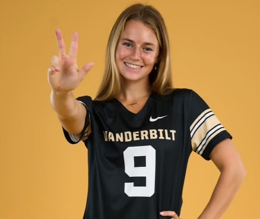

How to Read This Room
This website serves as your digital companion to the physical exhibit. Each page on the timeline corresponds directly to a wall panel in the gallery. As you move through the space, use the QR codes on the walls to keep your experience aligned—they ensure you stay on track even if you explore the gallery walls out of order.
Credits
This website was created through a collaborative effort with Ally Jacobs from Peabody College and the Peabody Museum design team. Together, we worked to bring this digital exhibition to life, honoring the legacy of Roger Williams and making these important historical materials accessible to all.
Development Team
